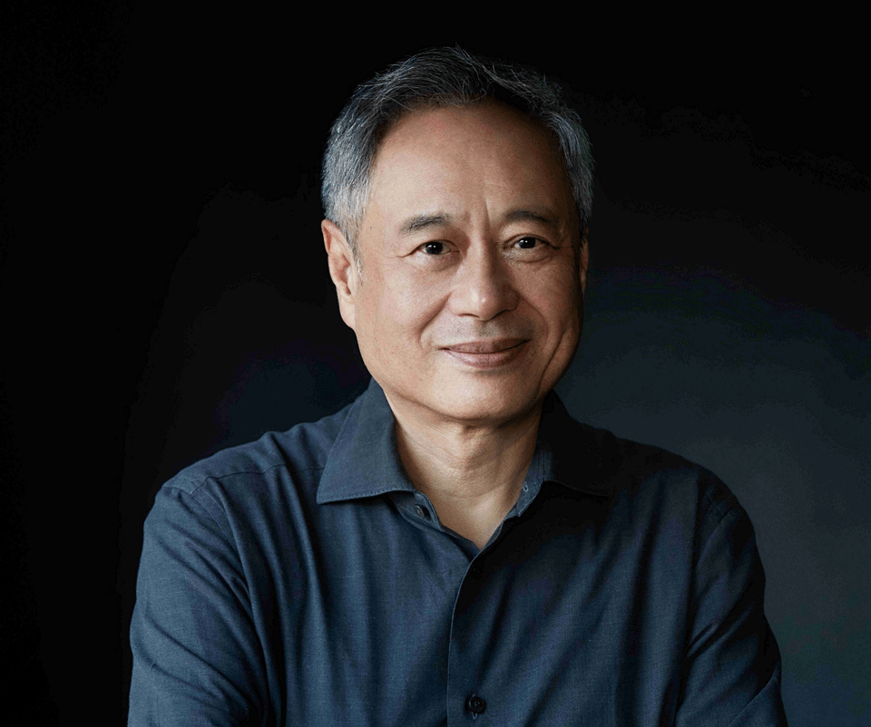
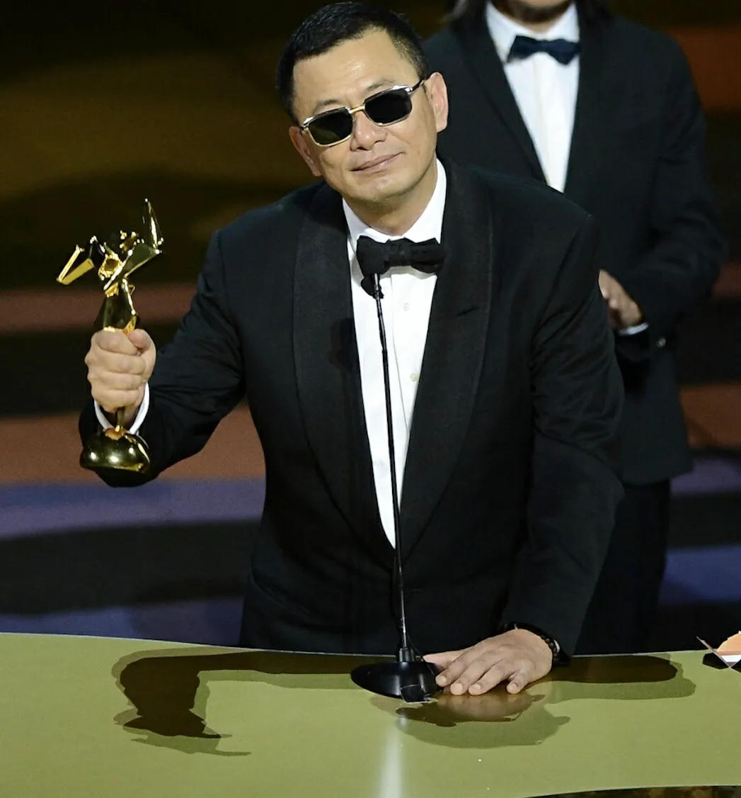
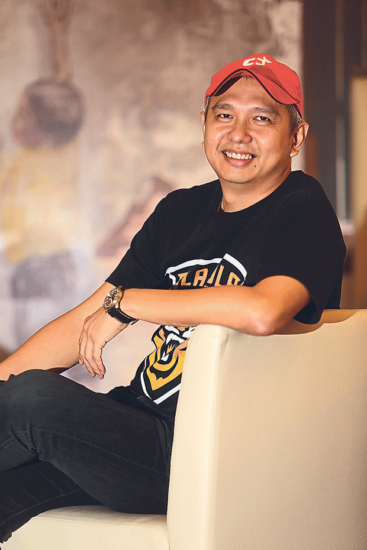

Influential Figures in Film Production (China, Hong Kong, and Malaysia)
| Photo | Name | Contribution | Link |
|---|---|---|---|
|  | Ang Lee 🇹🇼 | Award-winning director and producer (Life of Pi, Crouching Tiger Hidden Dragon) | View Biography |
|  | Wong Kar Wai 🇭🇰 | Famous director and producer (In the Mood for Love) | View Profile |
|  | Chiu Keng Guan 🇲🇾 | Malaysian film director and producer (Ola Bola, The Journey) | Wikipedia Profile |
| Tan Chui Mui 🇲🇾 | Independent Malaysian filmmaker and producer (Love Conquers All) | Learn More |